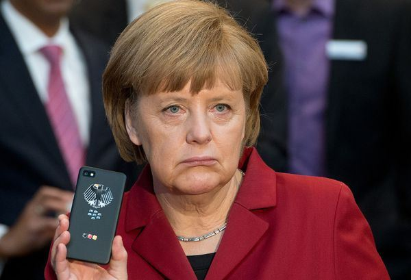

2014-09-19 22:14
在冷戦结束后的二十多年里，美国霸权在欧洲的代理人是英国。德法两国则分工合作，致力于建立独立的欧洲势力；德国在幕后默默建设统一欧洲的经济框架，法国则在台面上领导欧洲自己的外交政策。以2003年小布希的伊拉克戦争为例，只有英国奋勇争先充当马前卒，德国消极抵制，法国则公开拆英美谎言的疮疤。因此美国对德法两国一直很有戒心，二十几年来通过北约来约束他们的军事和外交，在经济上则以各种金融手段打撃欧元和欧元区的银行。国安局（NSA）对外监听更是把德法也列为重点。但是最近几年的世界局势演化得很快，美英德法的戦略环境都有了剧变，以致到2014年中，一场大规模的戦略板块重整已经在媒体的无视下悄悄发生。
那戦略环境是怎様地变动呢？对美国来说，最重要的当然是中共的崛起，美国的单极霸主的寳座因此而坐得不稳。欧巴马决心重拾冷戦的围堵戦略以孤立中共，而最重要的棋子依序就是欧俄日。经过几年的努力，他得到了日本而失去了俄国；欧洲的局面则很混乱，因为它并不是铁板一块的单一主权国家，中美双方都必须一个一个国家来争取影响力。
在这様的背景下，德法英做为欧洲三强，便成为中美必争之地。原本法国的外交最为独立，也就最为亲中，但是2007年犹太裔的萨科吉接任总统后，因为他与美国金融界的亲密关系，外交政策做了大转弯，变成英法两国争做美国在欧洲的“最佳朋友”。不过因为中共专注在贸易上，萨科吉并不须要和中共决裂，2008年金融危机后，更没有理由得罪中共这个大金主。2012年，奥兰德继任总统后，基本上沿续这个两面讨好的政策。中共并不要求其友邦反美，而美国也不太介意法国的三心两意，因为法国国力在2008年后快速衰退，在欧盟和欧元区的份量，已经完全不足轻重。
欧洲三强之中，英国原本是美国的铁杆盟友，对中共的敌意也最明显。歷年来，提起取消欧盟对中共的武器禁运（现在中共军工技术整体来说已经赶上了西欧，根本不在乎了），英国都是第一个跳出来反对的。但是首相卡梅伦在2012年会见达赖之后，中共取消了官方接触。一年多下来，英国的企业界和金融界哀嚎遍野，怨声载道。最后卡梅伦只好低声下气地向中共道歉，在终于获准访问北京的时候，甚至说出英国将致力成为中共“在欧洲的最好朋友”的话来。美国当然是暗怒在心，但是更让美国生气的是，英国竟真的和中共签了人民币的境外买卖协定，积极地想把伦敦建设为人民币的海外交易中心，这是明显地扯美元的后腿，而美元是美国霸权的最重要支柱。还好英国民眾对欧盟反感极深，卡梅伦被逼答应在2017年前要举行脱离欧盟的公投，使得英国在欧盟的地位大幅下降。另一个卡梅伦也是被逼答应的苏格兰独立公投也使英国祸起萧墙，无力外顾。美国因此可以不在乎英国和中共的眉来眼去。
在2008年的金融危机后，实力和地位快速增强的欧洲国家，只有德国。德国在二次大戦后，和日本一様被美国在军事和外交上绑得死死的，但是在工业上苦干实干，等其他先进国家都因为玩金融过火而自焚的时候，就显得鹤立鸡群了。德国的发展模式和中共基本一致，在技术上又始终领先，所以和中共的贸易发展很快，外销大量的工具机和高端零件，关系越来越亲密。到最近几年，甚至容许中方的公司购买重要的德国中小企业，例如世界混凝土机最高端的制造商Putzmeister就在2012年被买下。同时因为欧盟其他国家集体衰退，德国就是不想当领头羊也身不由己，连波兰这个和德国接壤的世仇，都在去年出来呼吁德国“负担更多的责任”（见波兰外交部长在金融时报的文章）。其实德国并不是不想成为欧洲的领袖，它和中共的密切合作就是为了挣脱美国对它的束缚；只是欧洲的烂摊子实在太糟糕，而所谓的责任代表着必须花费大把的钞票，却又没有连带的权力。
而赋予德国在欧盟实际权力的关键就是美国：英法的实力都已经不能和德国相提并论了，但是东欧国家都是美国的忠狗，所以欧盟权力的正式转移还是需要幕后老板的点头。刚好德国最让美国生气的欧元，现在连存活下去都有问题，根本不能再威胁美元的地位，因此双方有了妥协的余地，也就是德国以与中共关系降温为条件，获得美国的首肯来主导欧盟。这种密约当然不会马上对外公开，所以我是没有直接证据的，可是间接证据非常明显：在今年三月习近平访德期间，德国还很热中于建设法兰克福为人民币的海外交易中心；等到七月默克尔访问中共的时候，兴趣忽然不见了，而且在日本问题上打了地主一个耳光，连技术转移的买卖也一夕之间不做了。在对乌克兰问题的处理上，原本德国是反对对俄经济制裁的，到这个月反过来变成因为德国的坚持，欧盟才通过第二轮的制裁。好玩的是，最近欧盟理事会主席、欧盟委员会主席和欧盟外交部长的选举当选的都是德国挑的候选人；尤其后两者的人选原本都有很大的争议，后来轻松当选是很奇怪的。只有欧元集团常任主席的当选人是德国金融界反对的，可是他又刚好是美国支持的鼓吹货币和财政寛松的代表。美国的量化寛松（Quantitative Easing）已确定在下个月告一段落，亟需欧元区接棒以避免副作用。总体来说，双方利益交换的斧凿痕迹十分明显，唯一的不确定性在于德国对美国的承诺有多深。
原本中德经济关系很密切，而且默克尔对被美国国家安全局（NSA，National Security Agency）监听电话很不高兴，但是外交上没有永恒的朋友和敌人，只有永恒的利益。只要美国出价够高，默克尔一様的卖。此外虽然默克尔自己是东德出身，她身边的幕僚有很多着名的亲美派，有些甚至被谣传是CIA的代理人。
在二戦后经过69年的努力，德国终于如愿以偿，成为欧洲除了军事以外，政治、经济、外交三方面的实质领袖。不过德中关系的降温，显然是美国开出的条件之一。只要德国在军事上仍然是美国的附庸，它就不能真正主导自己的命运。日本也是一様的：安倍和美国的利益交换也类似德国的例子，亦即日本牺牲和中共的贸易利益，而美国则允许它重新解释宪法以便对外用兵。本来美国还希望日本在对美贸易上也签下卖身契，也就是为美国量身订制的美亜自由贸易协定TPP（Trans-Pacific Partnership），没想到日本会过河拆桥。欧巴马在四月访问日本，以为TPP已是嚢中物。结果安倍先请欧巴马在记者会上公开为日本再军事化站台之后，对TPP用“拖”字诀让他空手而归；安倍的手法之高超细腻和用心之下流无耻，让连这套伎俩的老祖宗美国都上了当，当真令人嘆为观止。但是连自己主人的虎鬚也敢捻，日本人只见树而不见林的民族性表露无遗。话说回来，美国和德国讨价还价的时候，必然也提到了美国和欧盟间的自由贸易协定TTIP（Transatlantic Trade and Investment Partnership），这牵涉到几千亿美元的经济利益，默克尔肯不肯让步，我们要等到明年才能确定。不过至少德国人在诚信上，和日本人是颇有不同的；欧巴马大概不须担心会重蹈覆辙。
在短期来说，德国既然有了欧盟的政策主导权，又对美国有所承诺，中共近年的联欧制美戦略，只怕是玩不转了；而欧盟的正式与非正式贸易壁垒，如反倾销调查，极可能会变本加厉。中共这两个月把自已的反倾销调查搞得如火如荼，大概也有先声夺人、杀鸡儆猴的意思。总体来看，欧盟是一盘散沙，经济上又很衰弱，许多次要国家和德国自己的工商界对中共仍有所求，中方倒也不至于在欧洲遭遇全面的戦略崩溃，美德密约只能算是一时的戦术挫败；只要德国在TTIP上没有做出太大的让步，中共的损失是很有限的。长期来说，欧洲终于有了共主，若是德国能进一步巩固它的领导权，必然不会甘心永远受美国的箝制驱使，而会试图把美国实力驱逐出境，建立真正独立自主的现代欧洲，这与中共要建立多极世界的远程目标不谋而和；若是德国也衰退下去，则欧洲将失去其经济上的最后动力，从此缓慢消沉，逐渐淡出世界舞台。而美国只能希望欧洲的问题不死不活地拖下去，以便持续其控制，榨取最大的特权。中共的最佳对策则是工业升级，在技术上“超赶德日”，以图建立国力的全面优势，这恰是两个月前李克强公布的20年长远目标（他刚说的时候，我还觉得他对德国这友邦太不客气了；现在回头来看，自有其道理）。纯属巧合吗？日后方见分晓。
【后注一】果然如我所预料的，欧元央行（European Central Bank，ECB）在2014年十月3日宣布将从十月中旬起，接手美国即将结束的量化寛松。其幕后的利益考量，我在《美元的金融霸权》一文中有详述。
【后注二】英国财政部于2014年十月14日宣布成功发行30亿元以人民币计价的国债。此举使得英国成为第一个发行人民币国债的西方国家，其发行规模在非中国发行的人民币债券中最大。此次发行的3年期国债规模30亿元，利率设为2.7%。中英的金融合作正在稳步前进。
【后注三】2014年十月21日，欧盟解除了对华为和中兴两个公司的反倾销调查。由此可见德国对美国的承诺是很有限的。